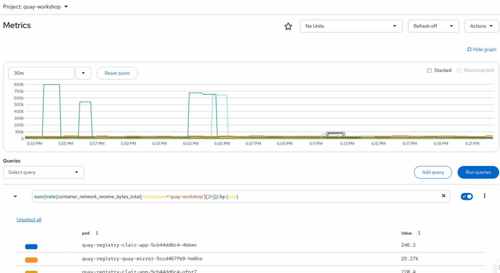

Observability and Day-2 Operations
In a production environment, your container registry is a Tier-1 critical service. If Red Hat Quay goes down or becomes slow, your CI/CD pipelines stop, and your developers cannot deploy code.
The Quay Operator natively integrates with the OpenShift Prometheus stack, automatically exposing dozens of critical metrics and deploying pre-configured Grafana dashboards directly into the OpenShift Web Console.
Generating Registry Traffic
Dashboards are boring when a system is idle. Before we look at the metrics, let’s act like a busy CI/CD pipeline and generate a sudden spike of traffic against our registry to see how the observability stack reacts.
-
Open your terminal and run the following bash loop. This script will pull a tiny image (Alpine) and push it to your registry 30 times in a row, tagging it differently each time:
echo "Starting CI/CD load simulation..." for i in {1..30}; do podman pull docker.io/library/alpine:latest --quiet podman tag docker.io/library/alpine:latest ${QUAY_HOSTNAME}/olleb/load-test:$i podman push ${QUAY_HOSTNAME}/olleb/load-test:$i --quiet echo "Pushed tag: $i" done echo "Load test complete!"
Analyzing the Quay Dashboard
Now that we have created a traffic spike, let’s investigate how OpenShift captured it.
-
Open a web browser and log in to the Red Hat OpenShift Container Platform web console.
-
On the left navigation menu, go to Observe → Dashboards.
-
In the Dashboard drop-down menu, select
quay-workshopnamespace.


-
Adjust the Time Range at the top right of the dashboard (set it to
Last 30 minutesorLast 5 minutes) to zoom in on the traffic spike you just created.

Exploring Raw Prometheus Metrics
While graphical dashboards are great for humans, automated alerting systems and external scrapers need raw data. Quay natively exposes all its internal telemetry in the standard Prometheus text format.
For security reasons, Quay does not expose telemetry to the public internet. Instead, it serves metrics on a dedicated internal port (9091). Let’s act as an SRE and use a Kubernetes tunnel to securely read this data.
-
Open a temporary port-forward session in the background to access the internal metrics service:
QUAY_POD=$(oc get pod -n quay-workshop -l quay-component=quay-app -o jsonpath='{.items[0].metadata.name}') oc port-forward $QUAY_POD 9091:9091 -n quay-workshop > /dev/null 2>&1 & sleep 2 -
Now, use
curlagainst your local tunnel to fetch the raw metrics. We will useheadto see the first few lines of the output:curl -s http://localhost:9091/metrics | head -n 15 -
You will see an output containing standard Prometheus text metrics, typically starting with Go and Process telemetry:
# HELP go_gc_duration_seconds A summary of the wall-time pause... # TYPE go_gc_duration_seconds summary go_gc_duration_seconds{quantile="0"} 4.3415e-05 ...Architecture Note: Quay is a Python application with ephemeral workers. To expose metrics reliably, it pushes them to a local
pushgatewaysidecar (which is written in Go). This sidecar acts as a buffer, aggregating the application metrics and exposing them on port 9091 for OpenShift’s monitoring stack to scrape. -
Clean up by terminating the background port-forward process:
kill %1
|
Universal Observability: Because Red Hat Quay uses the standard OpenMetrics format, you can point any enterprise monitoring tool (like Datadog, Dynatrace, or an external Prometheus) to this internal port to instantly ingest Quay’s telemetry into your corporate dashboards. |
Advanced: Querying Raw Metrics (PromQL)
Behind the scenes, the OpenShift monitoring stack is powered by Prometheus. You can query the raw data directly to build custom alerts or investigate specific infrastructure behavior.
-
Still in the OpenShift console, navigate to Observe → Metrics.
-
In the Expression box, enter the following PromQL query to analyze the rate of incoming network traffic for each pod in our Quay namespace:
sum(irate(container_network_receive_bytes_total{namespace='quay-workshop'}[2h])) by (pod) -
Press Enter (or click Run Queries).
You will see a raw graph showing the network bytes received by each individual pod over time. Because we just pushed an image 30 times in a row during our load test, you should see a massive, distinct spike in the network traffic hitting the Quay application pods.

|
Infrastructure vs. Application: This query demonstrates how SREs correlate operations. Even if application-level metrics are delayed, the underlying Kubernetes network metrics immediately reveal the exact pods absorbing the heavy CI/CD load. |